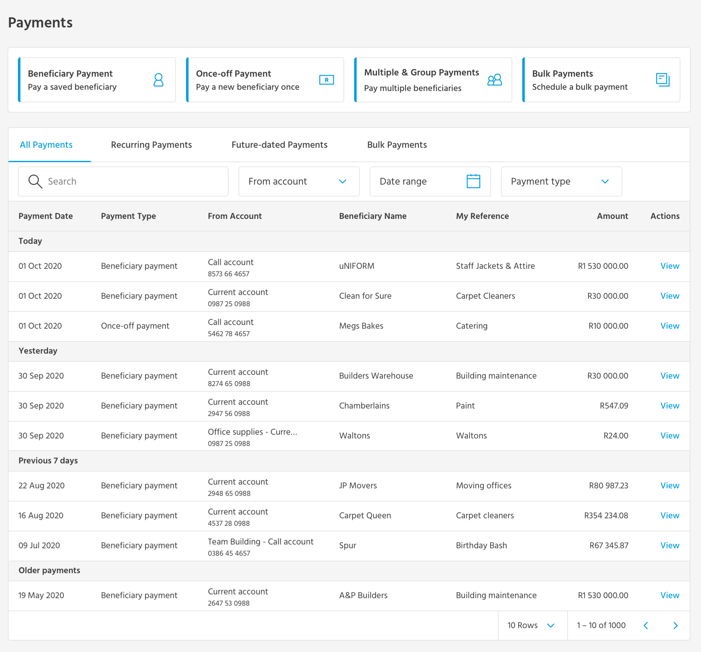
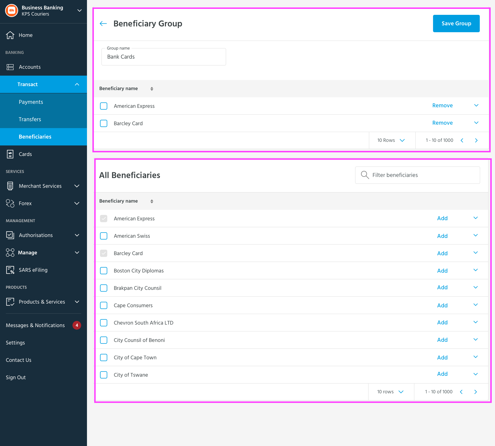
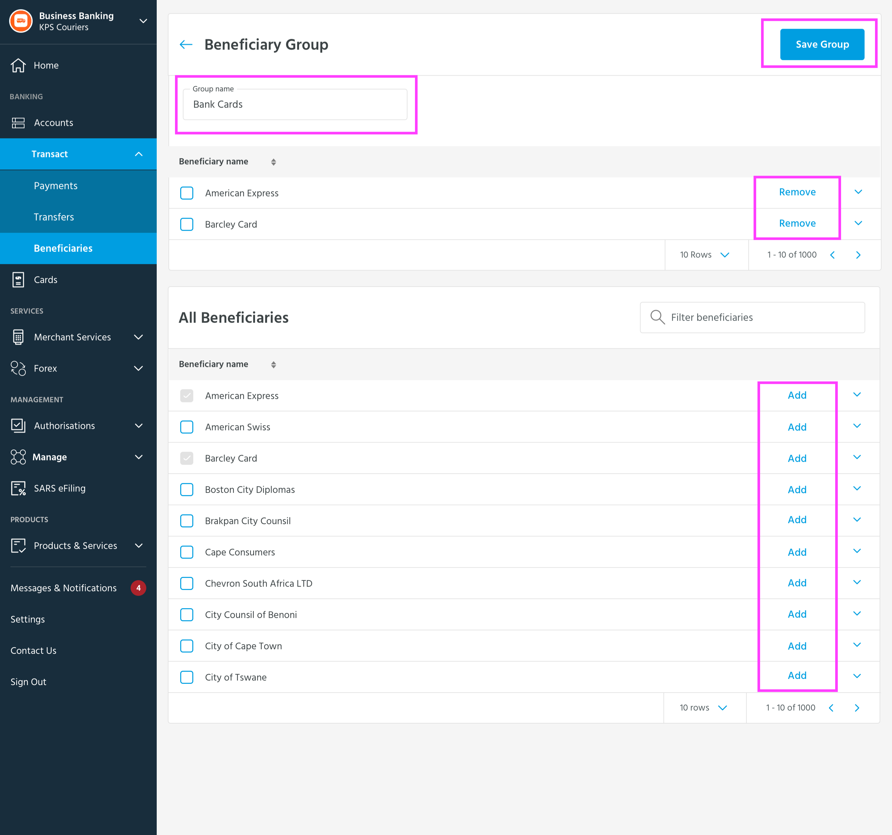
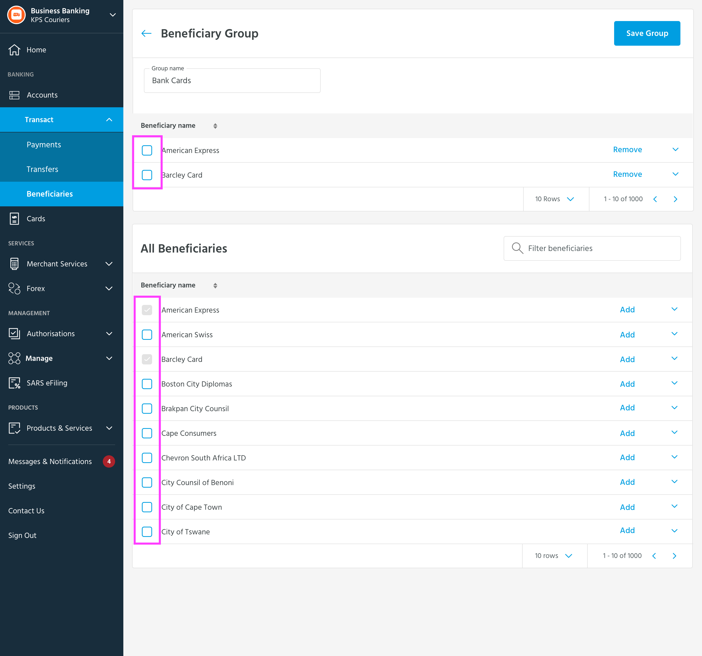
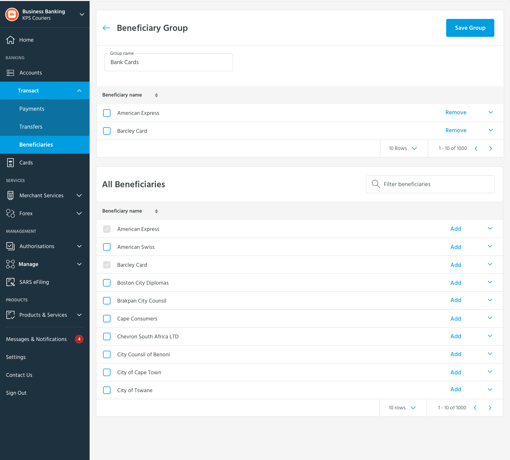
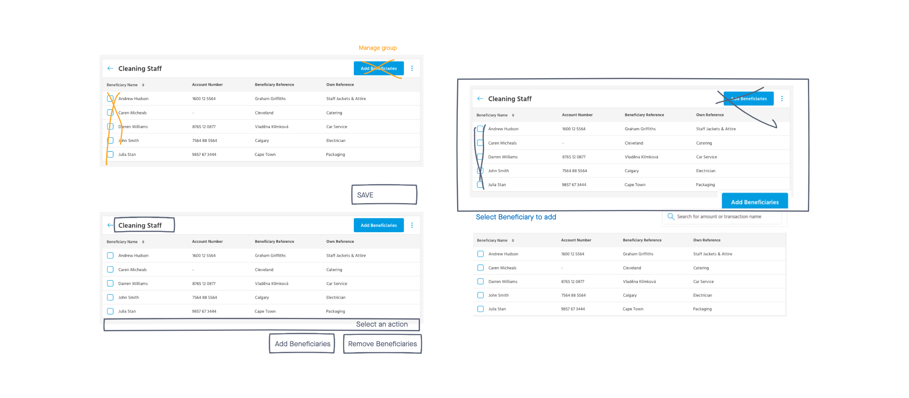
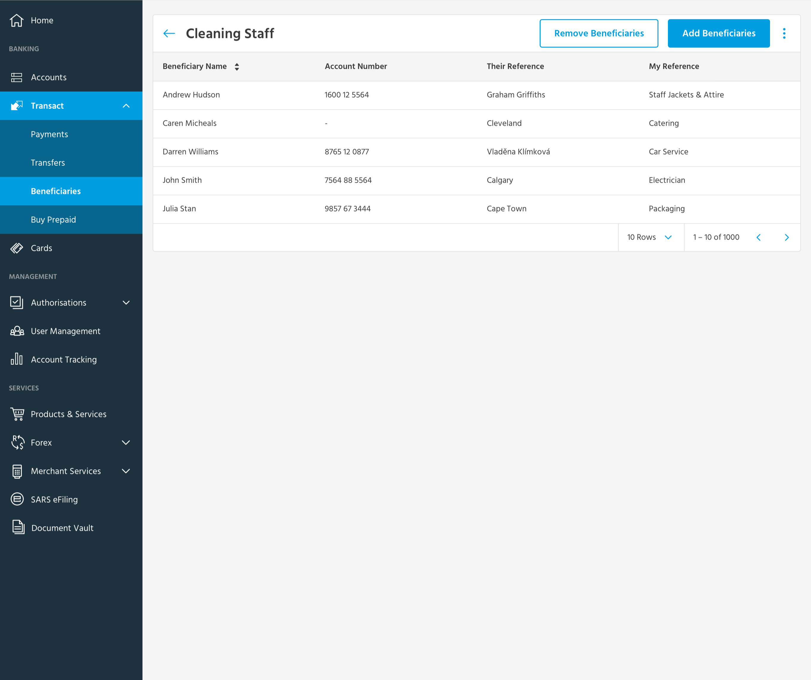
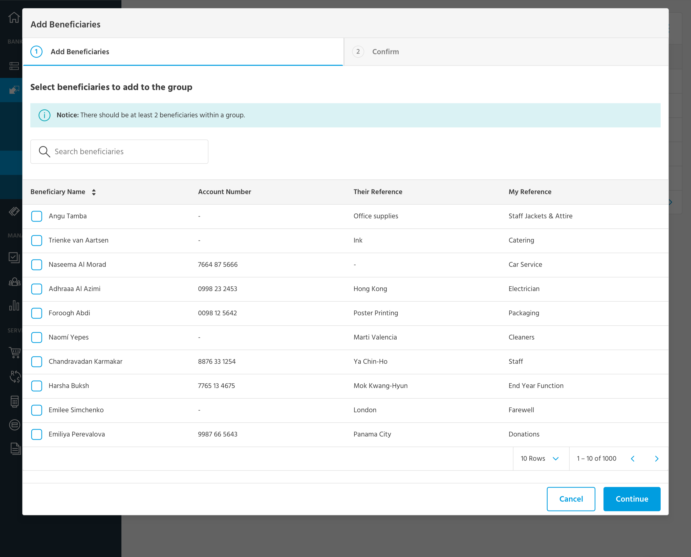

Cutting cognitive load in business banking flows users were actively avoiding.

Capitec's legacy business banking portal had a clarity problem. Finance officers, bookkeepers and owners of small-to-medium enterprises were making large, irreversible payments on an interface that overwhelmed them with choices and used patterns that contradicted themselves from one screen to the next.
I worked as part of a three-designer team on the portal's rebrand and rebuild. My focus landed on two of the highest-stakes flows: beneficiary group creation and multi-payments. The goal was not to ship something prettier. It was to rebuild trust at the exact moments users were most likely to make a costly mistake.
"Users were paying beneficiaries one by one because they didn't trust the bulk-payment feature enough to use it. Fear was eating the feature's entire value."
Insight from Ipsos user testingThe portal was overloading users at the worst moments.
User research with Ipsos surfaced a consistent pattern. Users found the portal's navigation confusing and its terminology inconsistent with how they thought about their own work. The iconography didn't help either. But the most damaging finding was specific to the flows I'd end up owning.
Users were choosing the slower path on purpose:
- Paying beneficiaries one at a time instead of using the bulk feature, because the bulk feature scared them
- Avoiding group payments entirely because the UI "didn't feel safe"
- Falling back on branch staff for tasks the portal was explicitly designed to let them self-serve
In regulated fintech, that's not just a usability problem. It's a business one. A feature nobody uses is a feature that costs money to maintain and earns nothing back.
Three problems on the beneficiary group screen
When we annotated the original beneficiary group screen with the Ipsos team, three distinct issues separated out cleanly:



The multi-payment flow had its own problems
The multi-payment screen was the highest-stakes flow in the portal, and the one users were most actively avoiding. Three issues compounded the avoidance:

The legacy multi-payment screen, with a red callout we added during research to mark one of the most-confused interactions. Users described the layout as "too many decisions per row to feel safe."
- Pay one by one. Users would rather make ten individual payments than risk one mistake on a multi-payment that could send the wrong amount to the wrong account.
- Too many actions on one screen. Account selection, amounts, references, statement narratives, and per-row deletion all competed for attention in the same horizontal row.
- Misleading icons. The icons next to fields didn't carry the meanings users expected. People weren't sure what they did until they clicked, and clicking felt risky.
Ipsos testing first, then iteration in the open.
We partnered with Ipsos for the user testing. They were the right partner for a regulated context: methodical, structured, and used to debriefing findings to mixed audiences of designers, business analysts, and stakeholders.
The testing surfaced what people were saying about the portal, but more usefully, it surfaced what they were doing despite saying it. People said they trusted the bulk-payment feature. Then they used it once and went back to single payments for the rest of the month. That gap between stated and observed behaviour is where the real design work lives.
Brainstorming the alternatives in the open
Once we had the Ipsos findings, the three of us on the design team worked through the alternatives in InVision Freehand. Annotating directly on screenshots, marking what to remove, deciding what to redirect, talking through every "what if we just..." until the team converged on a direction.

The Freehand board where we worked out the redesign in real time, marking up screenshots with crossed-out actions, redirected entry points, and proposed new patterns. Three designers, one whiteboard, no slide decks.
Fewer decisions, presented in order.
The original screen asked users to do everything at once. Name the group, see current members, see all available beneficiaries, add, remove, save. All on a single page where the same checkbox pattern meant different things depending on which section you were in.
We made three specific changes:
01. Limit simultaneous actions on screen
Only the actions relevant to the current task stay visible at any moment. The "Add Beneficiaries" button moved out of the top action bar and into a dedicated entry point. The page became a focused view, not a control panel.

The focused view. The screen now answers a single question per visit: who's in this group? Adding and removing are entry points to separate flows, not on-screen competitors.
02. Move destructive actions into their own modal flows
"Add Beneficiaries" and "Remove Beneficiaries" each became their own focused modal with a numbered stepper. Users could no longer accidentally end up doing the wrong thing because their attention was contained to one task at a time.

The Add Beneficiaries modal. A clear stepper sets expectations. A search field handles scale (these tables can run to thousands of rows). And the Continue button only commits to the next step, not the final action. Users can change their mind cheaply.
03. Standardise component behaviour
One checkbox pattern, one meaning. One add button, one flow. One remove affordance, one flow. The payoff is less visible than a redesigned layout, but it's where trust actually lives. When components behave predictably, users stop second-guessing themselves.
Building trust through structure.
The multi-payment flow was the screen most users were avoiding. Mistakes here meant real money moving to the wrong account. The redesign needed to make the right action feel obviously safer than the workaround.
Two structural changes did most of the heavy lifting. The hero image at the top of this case study shows the result.
01. Steppers to break the task into phases
A three-step progression (Payment Options → Beneficiaries → Confirm) lets users focus on one decision at a time. Error-checking also became cheaper. If something looked wrong at the confirm step, users could step back without losing the rest of their work.
02. Table-format data with explicit, labelled actions
Every beneficiary row shows exactly what's being sent, from which account, with which reference. The actions available are explicitly named ("Remove", "Edit") rather than hidden behind misleading icons. The total updates live as users add and edit rows. Nothing here is invisible or implicit.
"The redesign wasn't about making it prettier. It was about letting users do the right thing without a knot in their stomach."
What changed for the people using it.
I don't have hard before-and-after numbers from this project. Capitec's instrumentation didn't surface the metrics we'd have wanted, and the rebrand-and-rebuild ran on a timeline that didn't allow for proper longitudinal comparison.
What I do have is the qualitative side: what changed for the people using these screens, in their own words from follow-up testing.
- Users stopped avoiding multi-payments. The "I'd rather pay one by one" pattern faded once the stepper made the path forward obvious. The avoidance behaviour was the clearest measurable signal we'd been chasing, and it changed.
- Branch-call escalations on these flows dropped. The Capitec client experience team reported fewer "I think I made a mistake on a payment" calls in the months after rollout, though they didn't track this with the rigour I'd have liked.
- The components got reused. The patterns we set on these two flows (modal stepper for destructive actions, three-step confirm for high-value transactions) became the reference implementations for other parts of the portal we didn't directly touch.
If I were running this project today, I'd insist on success metrics being instrumented up front. That's a real lesson, and it's reflected below.
What this project taught me.
01Consistency is invisible, until it isn't
The biggest wins on this project weren't new patterns. They were the same pattern applied everywhere. When every checkbox means the same thing, users stop spending cognitive energy on the interface and start spending it on their actual task. In regulated domains especially, that trade is everything.
02Enterprise UX is invisible work
Rebuilding a banking portal meant working with business analysts, system analysts, account managers, developers, and a rotating cast of stakeholders (sometimes without a product owner present). The design was only as good as the documentation, the handoffs, and the patience to re-ground the team around users every time priorities drifted.
03Testing is the cheapest honesty
Working with Ipsos meant I couldn't argue my way past a pattern users couldn't parse. It grounded conversations with stakeholders who wanted to move faster than the evidence warranted, and it earned trust over time for the design decisions that followed.
04Instrument up front, or accept the qualitative story
This project shipped without proper success metrics in place, which means I tell its story qualitatively rather than with numbers. Today I'd insist on baseline instrumentation before a single screen was redesigned. The qualitative story is real, but it's harder to defend in a review. Always build the measurement in.